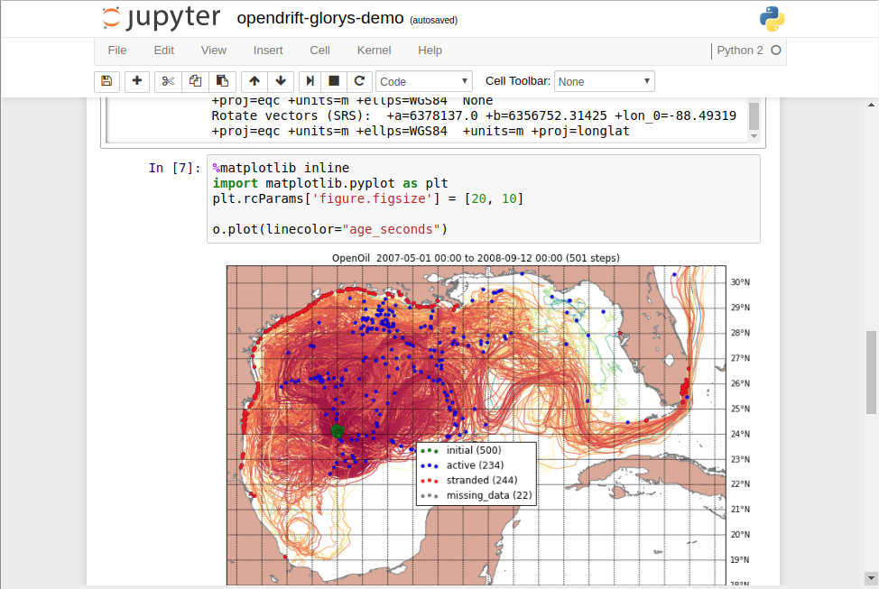

Tareas de ejemplo¶
Hola mundo¶
El siguiente script reserva un nodo de computo por un tiempo maximo de 1 minuto. El script imprime en la consola estandar “Hola Mundo” duerme 10 segundos y termina imprimiendo la fecha y hora.
#!/bin/sh
# Directivas
#PBS -N HolaMundo
#PBS -l nodes=1,walltime=00:01:00
# Definir los archivos de salida de consola y de error
#PBS -o holamundo.out
#PBS -e holamundo.err
# La variable de entorno $PBS_O_WORKDIR es el directorio desde el que se ejecuta "qsub holamundo.sh"
cd $PBS_O_WORKDIR
# Imprimir "Hola mundo"
echo "Hola Mundo"
# Dormir por 10 segundos
sleep 10
# Imprimir la fecha y hora
date
# Fin del script
Python¶
Programas en python pueden ser enviados como tareas por lotes al cluster.
Como ejemplo el siguiente codigo en python. interpol1D.py
import numpy as np
import matplotlib
matplotlib.use('Agg')
import matplotlib.pyplot as plt
from scipy import interpolate
x = np.linspace(0, 10, num=10, endpoint=True)
y = np.cos(-x**2/9.0)
f = interpolate.interp1d(x, y)
f2 = interpolate.interp1d(x, y, kind='cubic')
xnew = np.linspace(0, 10, num=200, endpoint=True)
tck = interpolate.splrep(x, y, s=0)
f3 = interpolate.splev(xnew, tck , der=0)
plt.plot(x, y, 'o', xnew, f(xnew), '-', xnew, f2(xnew), '--', xnew, f3)
plt.title('Intepolacion 1D - metodos')
plt.legend(['data', 'linear', 'cubic','Cubic Spline'], loc='best')
plt.savefig('interpol1D.png', dpi=250, format='png')
Preparamos el script para enviar la tarea al manejador de recursos:
#!/bin/bash
#PBS -N pythonjob
#PBS -q default
#PBS -l nodes=1
#PBS -j oe
module load anaconda-python-2.7
set -x
cd $PBS_O_WORKDIR
echo Inicio: `date` > tiempo.log
start=`date +%s`
python interpol1D.py
echo Final : `date` >> tiempo.log
end=`date +%s`
echo Tiempo ejecución : $((end-start)) seg. >> tiempo.log
Para ejecutar la tarea escribimos:
$ qsub submitjob.sh
El resultado de la operación correcta de esta tarea debe producir tres archivos, una imagen png interpol1D.png un archivo tiempo.log y submitjob.o#### siendo #### el numero del JobID que nos asigno el manejador de tareas.
Jupyter Notebook¶
Jupyter notebook es una aplicación web desarrollada en python, que permite crear y compartir documentos que contienen código vivo, ecuaciones, visualizaciones y texto narrativo, sus usos incluyen el analisis de datos, estadística, y visualización, entre otras cosas. Jupyter notebook soporta más de 40 lenguajes de programación, entre ellos Python, Julia, R, incluso Matlab.
Con esta aplicación podemos ejecutar comandos de Python, o Julia (2 Kernels disponibles en chaman) desde una interface web. Estos comandos se ejecutan en los recursos reservados de chaman, y se reciben los resultados numericos o graficos, embebidos en la misma interface web.
Note
Jupyter notebook esta disponible en los modulos anaconda-python-2.7 y anaconda-python-3.5.
Para ejecutar esta aplicación es necesario seguir los siguientes pasos:
Copiar el siguiente script a un archivo notebook-job.pbs:
1 2 3 4 5 6 7 8 9 10 11 12 13 14 15 16 17 | #!/bin/sh
# Directivas
#PBS -N notebook-job
#PBS -l nodes=1,walltime=01:00:00
# Definir los archivos de salida de consola y de error
#PBS -o notebook-job.out
#PBS -j oe
cd $PBS_O_WORKDIR
module load anaconda-python-2.7
JUPYTERPORT=9999
echo "ssh -N -L $JUPYTERPORT:$(hostname):$JUPYTERPORT $USER@chaman.cicese.mx"
jupyter notebook --no-browser --ip=$(hostname) --port=$JUPYTERPORT --NotebookApp.token=''
|
Reservar recursos:
$ qsub notebook-job.pbs
Si hay recursos disponibles en el cluster, el script generara un archivo de bitacora notebook-job.out, en la primera linea de este archivo estara un comando de ssh que necesitamos ejecutar en nuestro equipo local (PC, Laptop). El comando será algo como lo siguiente:
ssh -N -L 9999:compute-local-0-28:9999 miusuario@chaman.cicese.mx
Copiar este comando y ejecutarlo en el equipo local, ssh preguntara por su contraseña de acceso a chaman. Una vez escrita podemos navegar desde nuestro explorador (firefox, chrome) a http://localhost:9999 donde estara la interface web de jupyter notebook.
Important
Una vez terminada la sesión de Jupyter Notebook, no olvidemos terminar la tarea que se mando al cluster y el comando de ssh que se ejecuto en el equipo local.
[miusuario@chaman my-notebook]$ qstat
Job ID Name User Time Use S Queue
------------------------- ---------------- --------------- -------- - -----
29521 GOLFO36-TRA10 user1 256:41:0 R memsup
29522 GOLFO12-R29 user2 80:35:40 R default
29530 notebook-job miusuario 00:07:05 R default *
[miusuario@chaman my-notebook]$ qdel 29530
[miusuario@mi-maquina ]$ ssh -N -L 9999:compute-0-2.local:9999 miusuario@chaman.cicese.mx
Password: *****
^C (ctrl + C)
Solución de problemas¶
Si en el archivo notebook-job.out se encuentra algun mensaje como el siguiente:
ERROR: the notebook server could not be started because no available port could be found.
Probar cambiando la variable JUPYTERPORT en el script al numero anterior. Ej. JUPYTERPORT=9998
Esto puede ser necesario pues si el puerto que se especifique en JUPYTERPORT debe de estar disponible. Es decir que ninguna otra aplicación este utilizando el mismo puerto, tanto en los recursos reservados de chaman como en el equipo local.
C, C++¶
TODO
Fortran¶
TODO
Matlab¶
TODO